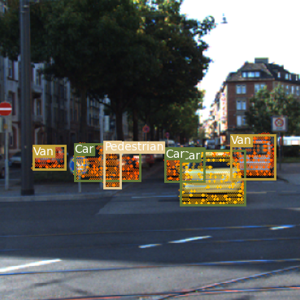
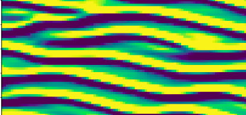

|
Hey there! I am a Computational Engineer with experience in working with Generative AI models and Computer Vision for Engineering Applications.
I have a Masters in Computational Sciences and Engineering at the Technical University of Munich and have done my thesis at the BMW Group. I graduated with a Bachelor's in Mechanical Engineering from BITS Pilani, Hyderabad Campus. I have also worked as a Software Engineer at L&T Construction implementing smart engineering solutions. Whenever I'm free, I enjoy playing the guitar and singing. I was the lead guitarist in the college band on multiple occasions. |

|
|
Broadly, I work in the field of Computer Vision, Machine Learning and Simulation Sciences. |

|
Thesis Project Master's Thesis work done at TUM in collaboration with BMW. This work uses Physics Guided Generative Models to accelerate
the synthesis of 2D and 3D flow manifold geometries that minimize pressure drop between inflow and outflow. A module for
fluid-based 2D and 3D topology optimization was developed in Phiflow. |

|
Project Here we developed a novel Point Set Generation Network, a two-stage reconstruction pipeline, that takes a single RGB image of a 3D object
as input and predicts a high-quality point cloud representing the shape. The network comprises of an Encoder-Predictor and a folding Decoder
network. This group project was done as a part of the
Machine Learning
for 3D Geometry course held by Prof. Dr. Angela Dai at TUM. |
|

|
Project I implemented the YOLOv3 and SSD (with VGG-16 as base network) object detection
frameworks and then trained them on the KITTI driving dataset comprising of 7 distinct classes. Both models
were compared on their mAP, F1 scores and inference performance for object detection on highways.
I optimized SSD for faster inference using L2 norm based network pruning, comparable detection accuracy and better run-time inference speed comparable to YOLOv3 tiny model. |
|

|
Project This project involved using Message Passing Graph Neural Networks and Convolutional Neural Networks for prediction solutions to the
Kuramoto-Sivashinsky Equation, a fourth-order stiff Ordinary Differential Equation. Both networks were implemented in a ResNet-like
fashion and various temporal unrolling techniques were explored to test for solution prediction and correction. This work was done
in association with Thurey's group at TUM chair of Graphics and Visualization |

|
Project I implemented a Deep-SDF architecture from the paper that learns a continuous Signed Distance Field representation of shapes. I trained
it on the Shapenet dataset to achieve high-resolution shape completion and latent shape interpolation on the test set. This project was
also done as a part of the Machine Learning for 3D geometry
course held by Prof. Dr. Angela Dai at TUM. |
|
|
Project I implemented and trained a Variational Auto-Encoder to learn pedestrian distribution inside the TUM Mathematik/Informatik building at Garching. After learning distribution, the estimation of pedestrians in a given area using the trained decoder was carried out for a hypothetical fire evacuation scenario. |
|
|
Project I solved the problem of efficient sphere packing in 2D via gradient-based minimization of overlap energy interaction function between any two spheres. The smallest most optimal domain size was computed to accommodate a given number of spheres, entirely through differential physics. Phiflow, a machine learning based optimization library for differentiable physics at TUM, was used in this work. |
|
|
Project Here we solved a solid topology optimization problem for a small 2D 6X6 Plate using Reinforcement Learning and package JAX-FEM in tensorflow and JAX. A Double Q Network was used as the agent with JAX-FEM as the Reinforcement Learning Environment. This project was done collectively with my team mates as part of the TUM Data Innovation Lab. |

|
Project I developed a 3D interactive ray tracing application on C++ using Simple Direct Media Layer (SDL2). The user can construct obstacles and roam around in the generated scene using WASD keys, just like a traditional first-person shooter game. |
Thanks for the template, Jon Barron!